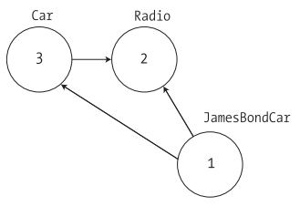

Chapter 17 - Understanding Object Serialization
Content
This chapter examines the related topic of object serialization. Using object serialization, you are able to persist and retrieve the state of an object to (or from) any System.IO.Stream-derived type.
Understanding Object Serialization
The term serialization describes the process of persisting (and possibly transferring) the state of an object to a stream.
The persisted data sequence contains all necessary information needed to reconstruct (or deserialize) the state of the object for use later.
Using this technology, it is trivial to save vast amounts of data (in various formats) with minimal fuss and bother.
In fact, in many cases, saving application data using serialization services is much less cumbersome than making direct use of the readers/writers found within the System.IO namespace.
The role of Object Graphs
When an object is serialized, the CLR will account for all related objects. The set of related objects is collectively referred to as an object graph.
Object graphs provide a simple way to document how a set of objects refer to each other and do not necessarily map to classic OO relationships (such as the "is-a" or "has-a" relationship),
although they do model this paradigmquite well.
Each object in an object graph is assigned a unique numerical value. Keep in mind that the numbers assigned to the members in an object graph are arbitrary and have no real meaning to the outside world.
Once all objects have been assigned a numerical value, the object graph can record each object's set of dependencies.
As a simple example, assume you have created a set of classes that model some automobiles (of course). You have a base class named Car, which "has-a" Radio.
Another class named JamesBondCar extends the Car base type. The figure shows a possible object graph that models these relationships.
Of course, the CLR does not paint pictures in memory to represent a graph of related objects. Rather, the relationship documented in the previous diagram is represented by a more mathematical formula
that looks something like this:
[Car 3, ref 2], [Radio 2], [JamesBondCar 1, ref 3, ref 2]

If you parse this formula, you can again see that object 3 (the Car) has a dependency on object 2 (the Radio).
Object 2, the Radio, is a lone wolf and requires nobody. Finally, object 1 (the JamesBondCar) has a dependency on object 3 as well as object 2.
In any case, when you serialize or deserialize an instance of JamesBondCar, the object graph ensures that the Radio and Car types also participate in the process.
Configuring Objects for Serialization
Tomake an object available to .NET serialization services, all you need to do is decorate each related class with the [Serializable] attribute.
If you determine that a given class has some member data that should not (or perhaps cannot) participate in the serialization scheme, you can mark such fields with the [NonSerialized] attribute.
This can be helpful if you have member variables in a serializable class that do not need to be "remembered" (e.g., fixed values, random values, transient data, etc.) and you wish to reduce the size of the persisted graph.
Here is the Radio class, which has been marked [Serializable], excluding a single member variable (radioID) that has been marked [NonSerialized] and will therefore not be persisted into the specified data stream:
[Serializable]
public class Radio
{
public bool hasTweeters;
public bool hasSubWoofers;
public double[] stationPresets;
[NonSerialized]
public string radioID = "XF-552RR6";
}
The JamesBondCar class and Car base class are also marked [Serializable] and define the following pieces of field data:
[Serializable]
public class Car
{
public Radio theRadio = new Radio();
public bool isHatchBack;
}
[Serializable]
public class JamesBondCar : Car
{
public bool canFly;
public bool canSubmerge;
}
Be aware that the [Serializable] attribute cannot be inherited. Therefore, if you derive a class from a type marked [Serializable], the child class must be marked [Serializable] as well,
or it cannot be persisted. In fact, all objects in an object graph must be marked with the [Serializable] attribute. If you attempt to serialize a nonserializable object using the BinaryFormatter or SoapFormatter,
you will receive a SerializationException at runtime.
Public Fields, Private Fields, and Public Properties
You may wonder how the various formatters expect a type's field data to be defined in order to be serialized into a stream. The answer is, it depends.
If you are persisting an object using the BinaryFormatter, it makes absolutely no difference. This type is programmed to serialize all serializable fields of a type,
regardless of whether they are public fields, private fields, or private fields exposed through type properties.
The situation is quite different if you make use of the XmlSerializer or SoapFormatter type, however. These types will only serialize public pieces of field data or private data exposed through public properties.
Choosing a Serialization formatter
Once you have configured your types to participate in the .NET serialization scheme, your next step is to choose which format should be used when persisting your object graph.
As of .NET 2.0, you have three choices out of the box:
- BinaryFormatter
- SoapFormatter
- XmlSerializer
The BinaryFormatter type serializes your object graph to a stream using a compact binary format. This type is defined within the System.Runtime.Serialization.Formatters.Binary namespace that is part of mscorlib.dll.
Therefore, to serialize your objects using a binary format, all you need to do is specify the following C# using directive:
using System.Runtime.Serialization.Formatters.Binary;
The SoapFormatter type represents your graph as a SOAP message. This type is defined within the System.Runtime.Serialization.Formatters.Soap namespace that is defined within a separate assembly.
Thus, to format your object graph into a SOAP message, you must set a reference to System.Runtime.Serialization.Formatters.Soap.dll and specify the following C# using directive:
using System.Runtime.Serialization.Formatters.Soap;
Finally, if you wish to persist an object graph as an XML document, you will need to specify that you are using the System.Xml.Serialization namespace, which is also defined in a separate assembly: System.Xml.dll.
As luck would have it, all Visual Studio 2005 project templates automatically reference System.Xml.dll, therefore you will simply need to use the following namespace:
using System.Xml.Serialization;
Serializing objects using the BinaryFormatter
The two key methods of the BinaryFormatter type to be aware of are Serialize() and Deserialize():
- Serialize(): Persists an object graph to a specified stream as a sequence of bytes
- Deserialize(): Converts a persisted sequence of bytes to an object graph
Here is example of serializing an object of the JamesBondCar class.
using System.Runtime.Serialization.Formatters.Binary;
using System.IO;
static void Main(string[] args)
{
Console.WriteLine("***** Fun with Object Serialization *****\n");
JamesBondCar jbc = new JamesBondCar();
jbc.canFly = true;
jbc.canSubmerge = false;
jbc.theRadio.stationPresets = new double[]{89.3, 105.1, 97.1};
jbc.theRadio.hasTweeters = true;
BinaryFormatter binFormat = new BinaryFormatter();
Stream fStream = new FileStream("CarData.dat", FileMode.Create, FileAccess.Write, FileShare.None);
binFormat.Serialize(fStream, jbc);
fStream.Close();
Console.ReadLine();
}
Deserializing Objects Using the BinaryFormatter
Now suppose you want to read the persisted JamesBondCar from the binary file back into an object variable. Once you have programmatically opened CarData.dat
(via the File.OpenRead()method), simply call the Deserialize()method of the BinaryFormatter. Be aware that Deserialize() returns a generic System.Object type,
so you need to impose an explicit cast, as shown here:
static void Main(string[] args)
{
fStream = File.OpenRead("CarData.dat");
JamesBondCar carFromDisk = (JamesBondCar)binFormat.Deserialize(fStream);
Console.WriteLine("Can this car fly? : {0}", carFromDisk.canFly);
fStream.Close();
Console.ReadLine();
}
Serializing objects using the SoapFormatter
The SoapFormatter will persist an object graph into a SOAP message, which makes this formatter a solid choice when you wish to distribute objects remotely using the HTTP protocol.
If you are unfamiliar with the SOAP specification, don't sweat the details right now. In a nutshell, SOAP defines a standard process in which methods may be invoked in a platform- and OS-neutral manner.
Consider the following code, which serializes an object of JamesBondCar class to a local file named CarData.soap.
using System.Runtime.Serialization.Formatters.Soap;
static void Main(string[] args)
{
SoapFormatter soapFormat = new SoapFormatter();
fStream = new FileStream("CarData.soap", FileMode.Create, FileAccess.Write, FileShare.None);
soapFormat.Serialize(fStream, jbc);
fStream.Close();
Console.ReadLine();
}
As before, simply use Serialize() and Deserialize() to move the object graph in and out of the stream.
If you open the resulting *.soap file, you can locate the XML elements that mark the stateful values of the current JamesBondCar as well as the relationship between the objects in the graph via the #ref tokens.
Serializing objects using the XmlSerializer
In addition to the SOAP and binary formatters, the System.Xml.dll assembly provides a third formatter, System.Xml.Serialization.XmlSerializer, which can be used to persist the state of a given object as pure XML,
as opposed to XML data wrapped within a SOAP message. Working with this type is a bit different from working with the SoapFormatter or BinaryFormatter type. Consider the following code:
using System.Xml.Serialization;
static void Main(string[] args)
{
XmlSerializer xmlFormat = new XmlSerializer(typeof(JamesBondCar),
new Type[] { typeof(Radio), typeof(Car) });
fStream = new FileStream("CarData.xml", FileMode.Create, FileAccess.Write, FileShare.None);
xmlFormat.Serialize(fStream, jbc);
fStream.Close();
}
The key difference is that the XmlSerializer type requires you to specify type information that represents the items in the object graph. Notice that the first constructor argument of the XmlSerializer defines the root element of the XML file,
while the second argument is an array of System.Type types that hold metadata regarding the subelements.
Persisting collections of objects
Now that you have seen how to persist a single object to a stream, let's examine how to save a set of objects.
As you may have noticed, the Serialize()method of the IFormatter interface does not provide a way to specify an arbitrary number of objects (only a single System.Object).
Recall that the System.Object in fact represents a complete object graph. Given this, if you pass in an object that has been marked as [Serializable] and contains other [Serializable] objects,
the entire set of objects is persisted right away. As luck would have it, most of the types found within the System.Collections and System.Collections.Generic namespaces have already been marked as [Serializable].
Therefore, if you wish to persist a set of objects, simply add the set to the container (such as an ArrayList or List<>) and serialize the object to your stream of choice.
Assume you have updated the JamesBondCar class with a two-argument constructor to set a few pieces of state data (note that you add back the default constructor as required by the XmlSerializer):
[Serializable, XmlRoot(Namespace = "http://www.intertechtraining.com")]
public class JamesBondCar : Car
{
public JamesBondCar (bool skyWorthy, bool seaWorthy)
{
canFly = skyWorthy;
canSubmerge = seaWorthy;
}
public JamesBondCar(){}
}
static void Main(string[] args)
{
List<JamesBondCar> myCars = new List<JamesBondCar>();
myCars.Add(new JamesBondCar(true, true));
myCars.Add(new JamesBondCar(true, false));
myCars.Add(new JamesBondCar(false, true));
myCars.Add(new JamesBondCar(false, false));
fStream = new FileStream("CarCollection.xml", FileMode.Create, FileAccess.Write, FileShare.None);
xmlFormat = new XmlSerializer(typeof(List<JamesBondCar>),
new Type[] { typeof(JamesBondCar), typeof(Car), typeof(Radio) });
xmlFormat.Serialize(fStream, myCars);
fStream.Close();
Console.ReadLine();
}
Summary
This chapter introduced the topic of object serialization services. As you have seen, the .NET platform makes use of an object graph to correctly account for the full set of related objects
that are to be persisted to a stream. As long as each member in the object graph has been marked with the [Serializable] attribute, the data is persisted using your format of choice (binary, SOAP, or XML).